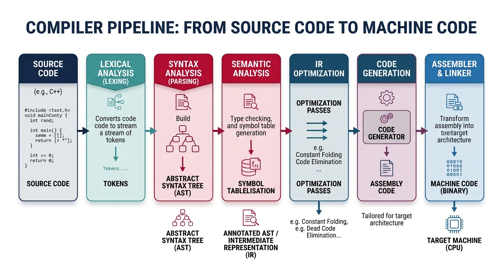
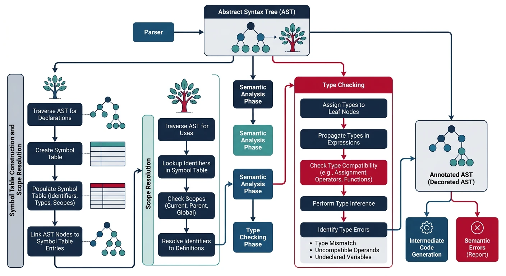
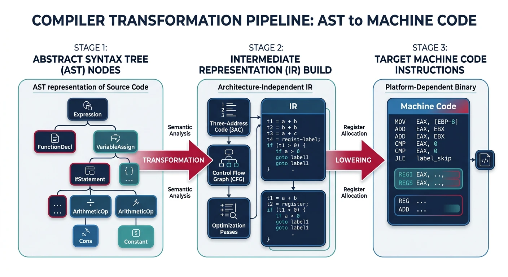
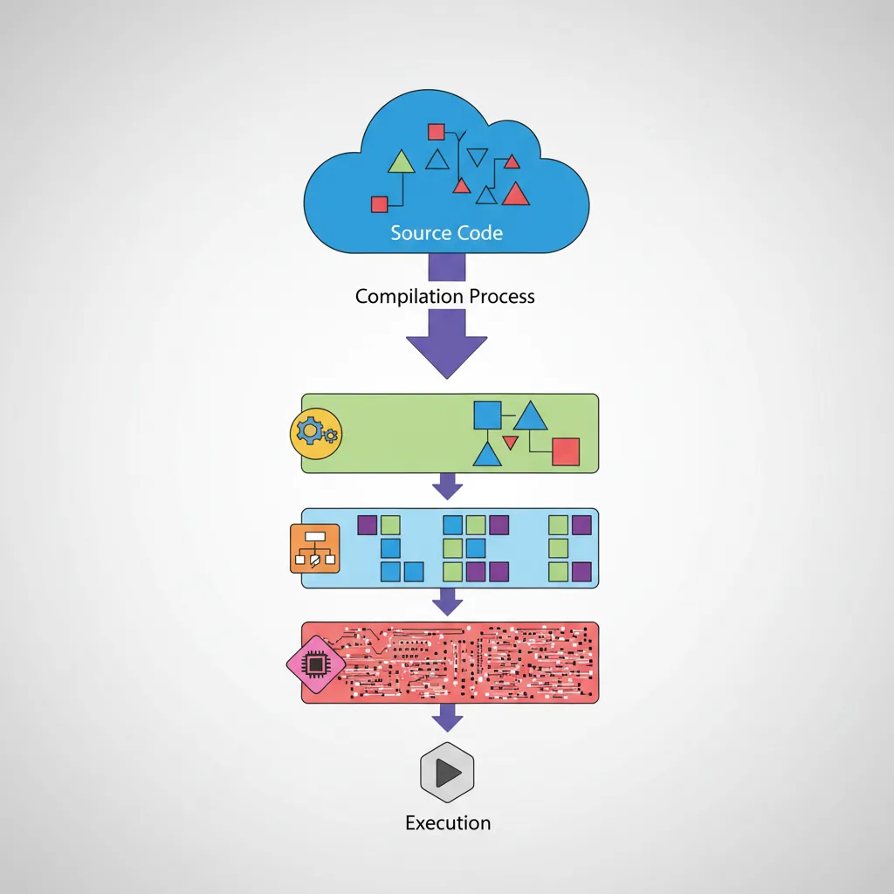

We use cookies to enhance your browsing experience, serve personalized content, and analyze our traffic.
By clicking "Accept All", you consent to our use of cookies. See our
Privacy Policy
for more information.
Understand how compilers transform high-level source code into machine code—from lexical analysis through parsing, semantic analysis, code generation, and optimization.
Compilers are sophisticated programs that translate high-level source code into machine code that processors can execute. Understanding compiler design reveals the bridge between human-readable programs and hardware execution.

The compiler pipeline: transforming high-level source code into executable machine code through multiple translation stages
Series Context: This is Part 6 of 24 in the Computer Architecture & Operating Systems Mastery series. Building on assemblers and linkers, we now explore how high-level languages are transformed into executable code.
Semantic analysis checks that the program is meaningful—not just syntactically correct. A sentence like "The table ate the conversation" is grammatically correct but semantically nonsensical. Similarly, code like int x = "hello"; parses fine but violates type rules.

Semantic analysis validates program meaning through type checking, scope resolution, and symbol table management
AST Construction
The Abstract Syntax Tree (AST) is a simplified version of the parse tree that removes syntactic details (parentheses, semicolons) and focuses on the essential structure.
Parse Tree vs AST
Source: x = 3 + 4 * 5;
Parse Tree (concrete): AST (abstract):
═══════════════════════════════ ═══════════════════════════
statement Assign
/ | \ / \
expr = expr ; x +
| / | \ / \
ID expr + term 3 *
(x) | /|\ / \
term term * factor 4 5
| | |
factor factor NUM(5)
| |
NUM(3) NUM(4)
AST benefits:
• Simpler structure (no redundant nodes)
• Directly represents computation
• Easier to analyze and transform
# AST Node Definitions for a Simple Language
from dataclasses import dataclass
from typing import List, Optional
@dataclass
class AST:
"""Base class for all AST nodes"""
pass
@dataclass
class Program(AST):
declarations: List[AST]
@dataclass
class FunctionDecl(AST):
name: str
params: List['Parameter']
return_type: str
body: 'Block'
@dataclass
class Parameter(AST):
name: str
type: str
@dataclass
class Block(AST):
statements: List[AST]
@dataclass
class VarDecl(AST):
name: str
type: str
initializer: Optional[AST]
@dataclass
class Assign(AST):
target: str
value: AST
@dataclass
class BinaryOp(AST):
op: str
left: AST
right: AST
@dataclass
class Call(AST):
function: str
arguments: List[AST]
@dataclass
class If(AST):
condition: AST
then_branch: AST
else_branch: Optional[AST]
@dataclass
class While(AST):
condition: AST
body: AST
@dataclass
class Return(AST):
value: Optional[AST]
@dataclass
class Num(AST):
value: int
@dataclass
class Var(AST):
name: str
Type Checking
Type checking ensures that operations are applied to compatible types. It catches errors like adding a string to an integer or calling a function with wrong argument types.
Type Checking Rules
Type Inference Rules (simplified):
══════════════════════════════════════════════════════════════
1. Literals:
42 : int
3.14 : float
"hello" : string
true : bool
2. Variables:
Look up type in symbol table
Error if not declared
3. Binary Operators:
int + int → int
int + float → float (implicit conversion)
string + string → string (concatenation)
int + string → ERROR!
4. Relational Operators:
int < int → bool
float < float → bool
int == float → bool (after conversion)
5. Function Calls:
- Check argument count matches parameter count
- Check each argument type matches parameter type
- Return type is function's declared return type
6. Assignments:
Target type must be compatible with value type
int x = 5; → OK
int x = "hi"; → ERROR!
7. Control Flow:
if (condition) → condition must be bool
while (cond) → condition must be bool
# Type Checker Implementation
class TypeChecker:
def __init__(self):
self.symbol_table = {} # name → type
self.function_table = {} # name → (param_types, return_type)
def check(self, node):
"""Visit AST node and return its type"""
method = f'check_{type(node).__name__}'
return getattr(self, method)(node)
def check_Num(self, node):
return 'int'
def check_Var(self, node):
if node.name not in self.symbol_table:
raise TypeError(f"Undefined variable: {node.name}")
return self.symbol_table[node.name]
def check_BinaryOp(self, node):
left_type = self.check(node.left)
right_type = self.check(node.right)
if node.op in ('+', '-', '*', '/'):
if left_type == 'int' and right_type == 'int':
return 'int'
elif left_type in ('int', 'float') and right_type in ('int', 'float'):
return 'float'
else:
raise TypeError(f"Cannot apply {node.op} to {left_type} and {right_type}")
elif node.op in ('<', '>', '<=', '>=', '==', '!='):
if left_type in ('int', 'float') and right_type in ('int', 'float'):
return 'bool'
raise TypeError(f"Cannot compare {left_type} with {right_type}")
raise TypeError(f"Unknown operator: {node.op}")
def check_VarDecl(self, node):
if node.initializer:
init_type = self.check(node.initializer)
if not self.compatible(node.type, init_type):
raise TypeError(f"Cannot initialize {node.type} with {init_type}")
self.symbol_table[node.name] = node.type
return None
def check_Assign(self, node):
var_type = self.symbol_table.get(node.target)
if var_type is None:
raise TypeError(f"Undefined variable: {node.target}")
value_type = self.check(node.value)
if not self.compatible(var_type, value_type):
raise TypeError(f"Cannot assign {value_type} to {var_type}")
return var_type
def compatible(self, target, source):
if target == source:
return True
if target == 'float' and source == 'int':
return True # Allow int → float
return False
Symbol Tables
The symbol table tracks all identifiers (variables, functions, types) and their attributes (type, scope, memory location). It supports nested scopes—variables in inner scopes can shadow outer ones.
Scoped Symbol Table
Source Code:
══════════════════════════════════════════════════════════════
int x = 10; // global scope
void foo(int y) { // foo's scope
int z = x + y; // z is local, x is global
if (y > 0) { // nested scope
int x = 5; // shadows global x!
z = x + y; // uses local x (5)
}
z = x + y; // uses global x (10)
}
Symbol Table with Scope Chain:
══════════════════════════════════════════════════════════════
┌───────────────────────────────────────────────────────────┐
│ GLOBAL SCOPE │
│ x: int (address: 0x1000) │
│ foo: function(int) → void │
└──────────────────────────┬────────────────────────────────┘
│ parent
┌──────────────────────────▼────────────────────────────────┐
│ FOO SCOPE │
│ y: int (parameter, offset: +16) │
│ z: int (local, offset: -8) │
└──────────────────────────┬────────────────────────────────┘
│ parent
┌──────────────────────────▼────────────────────────────────┐
│ IF-BLOCK SCOPE │
│ x: int (local, offset: -16) ← shadows global x! │
└───────────────────────────────────────────────────────────┘
Lookup "x" in IF-BLOCK:
1. Check IF-BLOCK scope → Found! Return local x
2. (Would check FOO scope if not found)
3. (Would check GLOBAL scope if not found)
# Scoped Symbol Table with Nesting
class Scope:
def __init__(self, parent=None, name="global"):
self.symbols = {} # name → Symbol
self.parent = parent
self.name = name
def define(self, name, symbol):
"""Add symbol to current scope"""
if name in self.symbols:
raise NameError(f"Redefinition of '{name}' in {self.name} scope")
self.symbols[name] = symbol
def lookup(self, name, local_only=False):
"""Look up symbol, searching parent scopes"""
if name in self.symbols:
return self.symbols[name]
if local_only or self.parent is None:
return None
return self.parent.lookup(name)
class Symbol:
def __init__(self, name, type, kind, scope_level, offset=None):
self.name = name
self.type = type # int, float, function, etc.
self.kind = kind # variable, parameter, function
self.scope_level = scope_level
self.offset = offset # stack offset for locals
class SymbolTable:
def __init__(self):
self.current_scope = Scope(name="global")
self.scope_level = 0
def enter_scope(self, name):
"""Create new nested scope"""
self.scope_level += 1
self.current_scope = Scope(self.current_scope, name)
def exit_scope(self):
"""Return to parent scope"""
self.scope_level -= 1
self.current_scope = self.current_scope.parent
def define(self, name, type, kind, offset=None):
symbol = Symbol(name, type, kind, self.scope_level, offset)
self.current_scope.define(name, symbol)
return symbol
def lookup(self, name):
return self.current_scope.lookup(name)
Code Generation
Code generation transforms the validated AST into lower-level code—either an intermediate representation (IR) for further optimization, or directly into assembly/machine code.

Code generation transforms the abstract syntax tree through intermediate representations into target machine instructions
Intermediate Representation
Most modern compilers use an Intermediate Representation (IR)—a language-independent form that's easier to analyze and optimize than source code or machine code.

Intermediate representation layers: compilers progressively lower code through multiple IR levels toward machine code
Compiler Pipeline Stages
flowchart LR
A["Source
Code"] --> B["Lexer
Tokenization"]
B --> C["Parser
Build AST"]
C --> D["Semantic
Analysis"]
D --> E["IR
Generation"]
E --> F["Optimization
Passes"]
F --> G["Code
Generation"]
G --> H["Machine
Code"]
style A fill:#e8f4f4,stroke:#3B9797
style E fill:#f0f4f8,stroke:#16476A
style H fill:#e8f4f4,stroke:#3B9797
Three-Address Code (TAC)
Source: x = a + b * c - d / e;
Three-Address Code (each instruction has at most 3 operands):
══════════════════════════════════════════════════════════════
t1 = b * c // temp1 = multiply
t2 = d / e // temp2 = divide
t3 = a + t1 // temp3 = add
t4 = t3 - t2 // temp4 = subtract
x = t4 // assign result
Each TAC instruction:
result = operand1 OP operand2
result = operand
result = OP operand (unary)
Common TAC Instructions:
━━━━━━━━━━━━━━━━━━━━━━━━━━━━━━━━━━━━━━━━━━━━━━━━━━━━━━━━━━━━
• Assignment: x = y
• Binary op: t = x + y, t = x * y, etc.
• Unary op: t = -x, t = !x
• Copy: t = x
• Conditional: if x goto L
• Unconditional: goto L
• Labels: L:
• Call: call f, n (call function f with n args)
• Return: return x
LLVM IR Example
# Compile C to LLVM IR
clang -S -emit-llvm hello.c -o hello.ll
cat hello.ll
; LLVM IR for: int square(int x) { return x * x; }
define i32 @square(i32 %x) {
entry:
%mul = mul nsw i32 %x, %x
ret i32 %mul
}
; LLVM IR for: int sum = a + b * c;
; Assume: a, b, c are i32 variables
%t1 = mul i32 %b, %c ; t1 = b * c
%sum = add i32 %a, %t1 ; sum = a + t1
; LLVM IR types:
; i1 = 1-bit integer (boolean)
; i8 = 8-bit integer (char/byte)
; i32 = 32-bit integer
; i64 = 64-bit integer
; float, double = floating point
; ptr = pointer (opaque in modern LLVM)
Instruction Selection
Instruction selection maps IR operations to target machine instructions. This involves choosing the best instruction for each operation, considering what the CPU actually supports.
IR to x86-64 Assembly
TAC: x86-64 Assembly:
═══════════════════════════ ═══════════════════════════════
t1 = b * c movl b(%rip), %eax
imull c(%rip), %eax
movl %eax, -4(%rbp) # t1
t2 = a + t1 movl a(%rip), %eax
addl -4(%rbp), %eax
movl %eax, -8(%rbp) # t2
x = t2 movl -8(%rbp), %eax
movl %eax, x(%rip)
Special cases - instruction selection finds efficient patterns:
━━━━━━━━━━━━━━━━━━━━━━━━━━━━━━━━━━━━━━━━━━━━━━━━━━━━━━━━━━━━━━━
t = x * 2 → shl $1, %eax (shift left = multiply by 2)
t = x * 8 → shl $3, %eax (shift left 3 = multiply by 8)
t = x / 4 → sar $2, %eax (shift right = divide by 4)
t = x % 8 → and $7, %eax (AND mask for power-of-2 mod)
t = x * 5 → lea (%rax,%rax,4), %eax (x + 4x in one instr!)
t = -x → neg %eax (negate)
Register Allocation
Register allocation is one of the most critical (and complex) compiler phases. The goal: map an unlimited number of IR temporaries to a limited number of CPU registers, minimizing slow memory accesses (spills).
The Challenge: x86-64 has only ~16 general-purpose registers, but programs can have thousands of variables and temporaries. Variables that are "live" at the same time (both in use) cannot share a register.
Register Allocation via Graph Coloring
Step 1: Build Interference Graph
━━━━━━━━━━━━━━━━━━━━━━━━━━━━━━━━━━━━━━━━━━━━━━━━━━━━━━━━━━━━
Variables that are "live" at the same time interfere.
They cannot share a register.
t1 = a + b // t1 born
t2 = t1 * c // t1 still live, t2 born
t3 = t2 - d // t1 dead, t2 live, t3 born
x = t3 // only t3 live
Live ranges:
t1: ████░░░░░░
t2: ░░██████░░
t3: ░░░░░░████
Interference graph:
t1 ──── t2 (t1 and t2 live together at line 2)
t2 ──── t3 (t2 and t3 live together at line 3)
(t1 and t3 don't interfere)
Step 2: Graph Coloring (K registers)
━━━━━━━━━━━━━━━━━━━━━━━━━━━━━━━━━━━━━━━━━━━━━━━━━━━━━━━━━━━━
Assign K colors (registers) so no adjacent nodes share a color.
With K=2 registers (eax, ebx):
t1 = eax
t2 = ebx (can't be eax - interferes with t1)
t3 = eax (can't be ebx - interferes with t2, but eax is OK!)
If graph has < K colors: No spills needed
If graph needs > K colors: Must "spill" some variables to memory
Spilling Strategy:
1. Pick variable to spill (heuristic: least frequently used)
2. Before each use: load from memory
3. After each definition: store to memory
4. Remove from graph, try coloring again
# Simplified Register Allocator (Linear Scan)
class RegisterAllocator:
def __init__(self, num_registers):
self.num_registers = num_registers
self.available = list(range(num_registers)) # Free registers
self.assignment = {} # variable → register
self.spilled = set() # Variables spilled to stack
def allocate(self, live_intervals):
"""
Linear scan allocation.
live_intervals: [(var, start, end), ...] sorted by start
"""
active = [] # Currently active intervals
for var, start, end in live_intervals:
# Expire old intervals (end before current start)
active = [(v, s, e) for v, s, e in active if e > start]
# Return registers from expired intervals
expired_vars = set(self.assignment.keys()) - {v for v, _, _ in active}
for v in expired_vars:
if v in self.assignment:
self.available.append(self.assignment.pop(v))
if self.available:
# Assign register to new variable
reg = self.available.pop()
self.assignment[var] = reg
active.append((var, start, end))
else:
# No registers available - spill longest-living
spill_candidate = max(active, key=lambda x: x[2])
if spill_candidate[2] > end:
# Spill the one that lives longest
self.spilled.add(spill_candidate[0])
reg = self.assignment.pop(spill_candidate[0])
self.assignment[var] = reg
active.remove(spill_candidate)
active.append((var, start, end))
else:
# Spill current variable
self.spilled.add(var)
return self.assignment, self.spilled
Optimization
Compiler optimizations transform code to make it faster, smaller, or more power-efficient—without changing its behavior. Modern compilers apply dozens of optimizations, from simple local improvements to sophisticated whole-program transformations.
Local optimizations operate within a single basic block (a straight-line sequence of code with no branches). They're simple but effective.
Common Local Optimizations
1. Constant Folding
━━━━━━━━━━━━━━━━━━━━━━━━━━━━━━━━━━━━━━━━━━━━━━━━━━━━━━━━━━━━
Before: x = 3 + 4 * 5;
After: x = 23; // Computed at compile time
2. Constant Propagation
━━━━━━━━━━━━━━━━━━━━━━━━━━━━━━━━━━━━━━━━━━━━━━━━━━━━━━━━━━━━
Before: x = 5;
y = x + 3;
z = x * y;
After: x = 5;
y = 8; // 5 + 3
z = 40; // 5 * 8
3. Algebraic Simplification
━━━━━━━━━━━━━━━━━━━━━━━━━━━━━━━━━━━━━━━━━━━━━━━━━━━━━━━━━━━━
x + 0 → x x * 1 → x
x - 0 → x x * 0 → 0
x * 2 → x + x x / 1 → x
x * 2^n → x << n x / 2^n → x >> n (for unsigned)
4. Common Subexpression Elimination (CSE)
━━━━━━━━━━━━━━━━━━━━━━━━━━━━━━━━━━━━━━━━━━━━━━━━━━━━━━━━━━━━
Before: a = b + c;
d = b + c; // Same computation!
After: t = b + c;
a = t;
d = t; // Reuse computed value
5. Dead Code Elimination
━━━━━━━━━━━━━━━━━━━━━━━━━━━━━━━━━━━━━━━━━━━━━━━━━━━━━━━━━━━━
Before: x = 5;
y = x + 3; // y never used!
z = x * 2;
return z;
After: x = 5;
z = x * 2;
return z; // y computation removed
6. Strength Reduction
━━━━━━━━━━━━━━━━━━━━━━━━━━━━━━━━━━━━━━━━━━━━━━━━━━━━━━━━━━━━
Before: x * 15
After: (x << 4) - x // 16x - x = 15x (shifts are faster)
Global Optimization
Global optimizations operate across multiple basic blocks, requiring data-flow analysis to track how values flow through the program.
Global Data-Flow Analysis
Control Flow Graph (CFG):
══════════════════════════════════════════════════════════════
┌─────────────┐
│ Entry: │
│ x = 5 │
└──────┬──────┘
│
┌──────▼──────┐
│ if (cond) │
└──────┬──────┘
│
┌──────────┴──────────┐
▼ ▼
┌───────────────┐ ┌───────────────┐
│ Block A: │ │ Block B: │
│ y = x + 1 │ │ y = x + 2 │
└───────┬───────┘ └───────┬───────┘
│ │
└──────────┬──────────┘
▼
┌─────────────┐
│ Exit: │
│ z = x + y │ ← x is 5 in both paths!
└─────────────┘ (global constant prop)
Reaching Definitions Analysis:
━━━━━━━━━━━━━━━━━━━━━━━━━━━━━━━━━━━━━━━━━━━━━━━━━━━━━━━━━━━━
"Which definitions of x might reach this point?"
At Exit block:
- Definition "x = 5" reaches (only definition of x)
- Two definitions of y reach (from A or B)
This enables:
- Global CSE (if same expression computed on all paths)
- Global constant propagation (if same value on all paths)
- Dead code elimination (if value never used later)
Loop Optimization
Loop optimizations are crucial because programs spend most time in loops. Even small improvements inside a loop multiply by iteration count.
Loop Optimization Techniques
1. Loop-Invariant Code Motion (LICM)
━━━━━━━━━━━━━━━━━━━━━━━━━━━━━━━━━━━━━━━━━━━━━━━━━━━━━━━━━━━━
Before: After:
for (i = 0; i < n; i++) t = a * b; // Moved out!
x[i] = a * b + i; for (i = 0; i < n; i++)
x[i] = t + i;
a * b is loop-invariant (doesn't change in loop)
2. Strength Reduction in Loops
━━━━━━━━━━━━━━━━━━━━━━━━━━━━━━━━━━━━━━━━━━━━━━━━━━━━━━━━━━━━
Before: After:
for (i = 0; i < n; i++) t = 0;
x = i * 4; for (i = 0; i < n; i++) {
x = t;
t = t + 4; // Add instead of multiply
}
3. Loop Unrolling
━━━━━━━━━━━━━━━━━━━━━━━━━━━━━━━━━━━━━━━━━━━━━━━━━━━━━━━━━━━━
Before: After (4x unroll):
for (i = 0; i < 100; i++) for (i = 0; i < 100; i += 4) {
a[i] = b[i] + 1; a[i] = b[i] + 1;
a[i+1] = b[i+1] + 1;
a[i+2] = b[i+2] + 1;
a[i+3] = b[i+3] + 1;
}
Benefits: Fewer branches, better instruction-level parallelism
4. Loop Vectorization (SIMD)
━━━━━━━━━━━━━━━━━━━━━━━━━━━━━━━━━━━━━━━━━━━━━━━━━━━━━━━━━━━━
Before (scalar): After (AVX2 vector):
for (i = 0; i < n; i++) for (i = 0; i < n; i += 8) {
c[i] = a[i] + b[i]; // Process 8 floats at once!
__m256 va = _mm256_load_ps(&a[i]);
__m256 vb = _mm256_load_ps(&b[i]);
__m256 vc = _mm256_add_ps(va, vb);
_mm256_store_ps(&c[i], vc);
}
8x speedup (in theory) for float operations
Seeing Optimizations in Action
# Compile with different optimization levels, compare assembly
gcc -O0 -S example.c -o example_O0.s
gcc -O2 -S example.c -o example_O2.s
gcc -O3 -S example.c -o example_O3.s
# Compare file sizes and instruction counts
wc -l example_O*.s
diff example_O0.s example_O2.s | head -50
# See what optimizations were applied
gcc -O2 -fopt-info example.c -o example
# LLVM: see optimization passes
clang -O2 -mllvm -print-after-all example.c 2>>&1 | less
# Godbolt Compiler Explorer (online)
# Visit godbolt.org - shows assembly in real-time!
Optimization Trade-offs: More aggressive optimization means longer compile times and harder debugging (code doesn't match source). Use -O0 -g for development and -O2 or -O3 for production.
Exercises
Hands-On Exercises
Build a Simple Lexer: Write a lexer for a calculator language supporting integers, +, -, *, /, parentheses. Test with expressions like "3 + 4 * (2 - 1)".
Implement Recursive Descent: Build a parser for the same calculator language. Output an AST and evaluate it.
Type Checker Challenge: Add type checking to your calculator—support both int and float. Handle implicit int→float conversion.
Three-Address Code Generation: Extend your calculator to output TAC instead of directly evaluating. Assign temporary variables for intermediate results.
Optimization Experiment: Write a C program with an obviously optimizable loop (e.g., loop-invariant multiplication). Compile with -O0 vs -O2 and compare the assembly.
Godbolt Exploration: Use Compiler Explorer (godbolt.org) to see how different compilers (GCC, Clang, MSVC) optimize the same code differently.
Conclusion & Next Steps
You've now explored the fascinating world of compiler design—from tokenizing source code to generating optimized machine instructions. Compilers are among the most sophisticated software systems ever built, combining theory (formal languages, automata) with practical engineering (register allocation, optimization heuristics).
Key Takeaways:
Lexical analysis converts characters to tokens using patterns (regex)
Parsing builds structured trees from token streams using grammars
Semantic analysis checks types, scopes, and program meaning
Code generation maps AST to IR to machine instructions
Register allocation is an NP-hard problem solved by heuristics
Optimizations transform code for speed while preserving behavior
Continue the Computer Architecture & OS Series
Part 5: Assemblers, Linkers & Loaders
Object files, ELF format, static and dynamic linking.